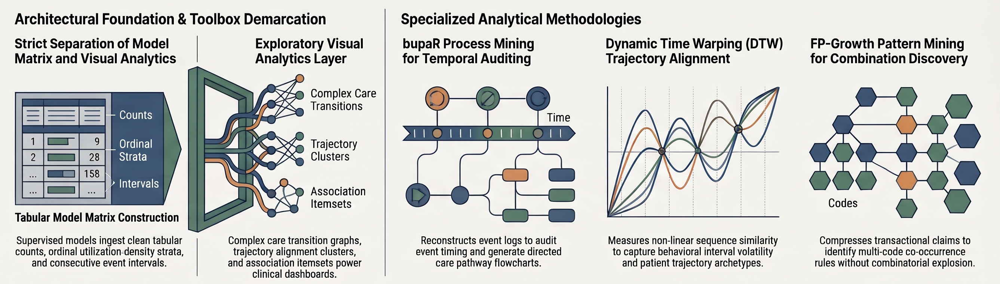

For Opioid and Polypharmacy Emergency Department Visits in Virginia’s APCD
R. Jerome Dixon, MDA, MSc IT
Integrative Life Sciences Doctoral Program(Personalized Medicine Track · Home Department) School of Pharmacy(Department of Pharmacotherapy & Outcomes Science · Research Lab) Virginia Commonwealth University
November 9, 2026
Supervisory Committee
Integrative Life Sciences Doctoral ProgramSchool of PharmacyDepartment of Pharmacotherapy & Outcomes Science
Committee Chair & Dissertation Sponsor
Elvin T. Price, Pharm.D., Ph.D., FAHA
Associate Professor, Department of Pharmacotherapy & Outcomes Science · VCU School of Pharmacy
Supervisory Committee Members
Franklin Bost, BPD, MBA, IDSA, FAIMBE
Professor Emeritus, Dept. of Biomedical Engineering & College of Engineering
Tamas Gal, Ph.D.
Director of Research Informatics & Core Director, Massey Comprehensive Cancer Center
Dayanjan S. Wijesinghe, Ph.D.
Associate Professor, VCU School of Pharmacy
Jonathan P. DeShazo, Ph.D.
Director of Real World Evidence Generation, CVS Health
Methodological Defenses: Scope, Governance & Transportability Crosses translational valley of death; presents peer-reviewed track record and defense fences.
The Clinical & Translational Crisis: Opioid Risk, Polypharmacy & The “Empty Intersection”
Figure 1A: Systematic Review Discovery Across 94 Supervised ML Studies & 73 PROBAST-Assessed Models: Upstream clinical burden, severe polypharmacy outcome neglect (5%), and the Zero-Intersection (“Empty Intersection”) of structured PGx, XAI, and prospective temporal validation. Click image to expand full-page.
Upstream Clinical Burden
US Opioid Epidemic:>500,000 lives lost since 1999; >$78.5B/yr economic burden \(^1\).
Geriatric Polypharmacy:\(\ge 5\) meds in >40% of adults \(\ge 65\), causing 125,000 deaths & 700,000 ED visits/yr\(^{2,3}\).
Zero Intersection (\(n=0\)):0 of 73 PROBAST models unite structured PGx, XAI, and prospective temporal validation.
References:1. Florence et al. (2016) Med Care 54(10):901–906. · 2. Duerden et al. (2013) The King’s Fund. · 3. Osanlou et al. (2022) BMJ Open 12(7):e055551. · 4. Crews et al. (2021) Clin Pharmacol Ther 110(4):888–896.
Clinical Problem Formulation: Dual Crises, “Silent ADEs” & Specific Aims
Module I · Clinical Problem
Epidemic 1: Opioid-Related ED Events (opioid_ed)
Target Population: Adolescents & adults aged 13–64 across Virginia APCD.
Explicit Claims Anchor (\(t_0\)): Direct diagnostic billing for F11.20 (opioid dependence) and T40.0X–T40.4X (heroin, prescription, synthetic fentanyl, and methadone poisonings) scanned across all 10 claim diagnostic positions.
The “Silent ADE” Coding Reality: Fewer than 5% of drug-induced ED visits are billed with explicit poisoning codes (T36–T50). Hospitals bill the downstream clinical syndrome:
Claims Anchor (\(t_0\)): Milliman HCG emergency lines (P51b, O11, P33) anchored to a 21–30 Day Proximal Rx Window, with 0 opioid codes in study year.
Methodological Demarcation: Pooling chronic opioid dependence (12-month trajectory) and acute geriatric polypharmacy (21-day proximal toxicity) into a single generic “ADE” model conflates incompatible pathophysiologies, age cohorts, and billing mechanics.
Aim 1 · Dual-Target GBDT Prediction (Ch. 3)
Quantify discrimination & calibration across both mutually exclusive ED targets (opioid_ed 12-mo vs. ed_non_opioid 21–30d) using CatBoost, XGBoost, and XGBoost-RF, selecting best models by PR-AUC/Recall and validating on an untouched 2019 holdout.
Aim 2 · Consensus-Risk Attribution (Ch. 4)
Label reproducible Consensus-Risk features (\(\text{SHAP} \cap \text{FFA}\)) by uniting dual-model TreeSHAP (Best CatBoost\(\cap\)Best XGBoost) with SHAP-prioritized symbolic FFA Boolean Horn rules solved via PySAT Hitman on the winning XGBoost variant.
Aim 3 · Translational CDS Prototype (Ch. 5)
Integrate Aim 1 risk scores and Aim 2 Consensus-Risk rules into an asynchronous, zero-PHI serverless Clinical OODA Loop review-prioritization prototype for pharmacist-led MTM.
Data Source Justification: APCD vs. EHR in Emergency Prediction
Module II · Governance & DataStatewide Generalizability
Figure 3: Data Source Architecture: Statewide capture and adjudicated dispenses in Virginia APCD overcome single-system EHR fragmentation and prescription abandonment.
Why Virginia APCD Is Selected
Statewide Capture: Follows patients across health systems, eliminating out-of-network ED blindness.
Medication Reality: Captures paid/adjudicated dispenses, proving physical drug possession.
Linkage Integrity: Single trusted data steward (VHI) guarantees 0 probabilistic linkage attrition.
The Methodological Compensation
EHR Genotype Gap: APCD lacks molecular genotypes and real-time bedside vitals.
CPIC PGx-Burden Proxies: We compensate by computing CPIC PGx-burden proxies (CYP2D6 / CYP2C19 substrate counts) directly from longitudinal co-prescriptions.
Cohort Development & Epidemiological Safeguards
Module III · Cohorts & Temporal QAEpidemiological Rigor
Sequential Case Filtering Funnel
Target Identification: ICD-10 codes across all 10 claim positions.
Frequency Cap (<7 ED/yr): Excludes chronic crisis utilizers.
21-Day Proximity: Aligned with FDA FAERS kinetics (\(>90\%\) ADEs).
0-Day Discharge Guard: Purges prescriptions filled on index date.
1:5 Matched Controls & QA
Matched on age band (8 strata), sex, and calendar year.
qa_index_date_uniqueness.py asserts single index date/yr.
Figure 4: Comparative APCD Derivation Pipeline: Opioid ED vs. Polypharmacy ADE tracks converging via 1:5 matching and DuckDB QA.
Safeguard Summary: Strict temporal sequencing and 0-day discharge guards eliminate reverse causality before feature engineering.
Cohort Pipeline Architecture: Opioid-Related ED (opioid_ed)
Module III · Cohorts & Temporal QAChronic Exposure Model (12-Mo)
Clinical Anchor (\(t_0\))
ICD-10 F11.20 (Opioid dependence).
Acute Poisonings:T40.0X–T40.4X.
Scanned across all 10 claim positions.
Step 3b Leakage Purge (Gal et al., 2023)
Partitions candidate events around \(t_0\) (\(t < t_0\) vs. \(t \ge t_0\)).
Oblivious trees (SymmetricTree) & ordered boosting.
Shift immunity on high-cardinality NDC/ICD-10 codes; exported as best .cbm.
XGBoost (Asymmetric)
Depth-wise gradient-boosted trees (xgb).
Second-order Hessian loss uncovers complex multi-drug interaction branches.
XGBoost-RF (Bagged)
Bagged random forest mode (xgb_rf, num_parallel_tree).
Minimizes prediction variance and stabilizes risk across low-density strata.
Step 6 Selection Protocol (run_final_model.py): Within each cohort, age band, and 4-tier density bin, 25-split MC-CV ranks CatBoost, XGBoost, XGBoost-RF, and Ensemble by mean PR-AUC (primary) and Recall at 0.5 (tiebreaker) to lock selected_model for risk scoring and best_xgb_variant (xgb vs. xgb_rf) + best CatBoost for attribution.
Cohort Feature Dynamics & Toolbox Demarcation
Module IV · Tri-Model & ConsensusFeature & Toolbox Demarcation

Figure 6: Architectural Foundation & Toolbox Demarcation: Supervised model matrix ingestion (counts, intervals, strata) vs. exploratory visual analytics (bupaR, DTW, FP-Growth). Click image to inspect complete master pipeline.
Supervised Tabular Model Inputs
Whitelisted Pre-Index Antecedents (safe_feature_filter.json): Verified pre-index chronic diagnostic counts, drug class exposures, and prescription intervals.
Claims Density Strata: Partitioned into Low, Medium, High, and Extreme utilization tiers (P25/P50/P95).
Step 7 Dual-Model TreeSHAP Gate: Computes exact TreeSHAP on best CatBoost and best XGBoost variant (xgb vs. xgb_rf), enforcing strict feature intersection (CatBoost\(\cap\)Best XGBoost) and normalized mean score.
Step 8 CNF Compilation: Explodes root-to-leaf paths of best_xgb_variant into Conjunctive Normal Form (CNF) clauses (_explode_tree_to_dataframe).
SHAP-Prioritized Rule Extraction (Step 8): Rather than extracting all rules from all trees across all models, filters matched CNF rules from best_xgb_variant by instance \(|\text{SHAP}|\) attribution and active feature coverage \(\rightarrow\) PySAT Hitman minimal Abductive Explanations (AXPs; \(\text{support} \ge 0.05, \text{confidence} \ge 0.70\)).
Step 10 Combined Synthesis: Ranks drivers via \(0.5 \cdot \text{SHAP}_{\text{norm}} + 0.5 \cdot \text{FFA}_{\text{norm}}\) and top-\(K\) intersection (shap_top\(\cap\)ffa_top).
Target Leakage Defense: The Step 3b Event-Partitioning Protocol
Module IV · Tri-Model & ConsensusStep 3b Reverse Causality Defense
Figure 7: Step 3b Temporal Event-Partitioning Protocol: Pre- vs. post-index (\(t < t_0\) vs. \(t \ge t_0\)) event timing audit, removal of post-event clinical interventions, and symmetric antecedent whitelist locking. Click image to inspect complete master pipeline.
Clinical Rationale (Ochalek, Gal et al., 2023)
Post-Overdose Clinical Workflow: As established in Dr. Gal’s VCU ED research (Ochalek, Gal et al., 2023, DADR), rescue agents and MAT induction (e.g., buprenorphine, naloxone) are initiated as a clinical consequence following an acute overdose.
The Reverse-Causality Trap (30% of Literature): Unmonitored gain rankings (Step 3a) capture post-event stabilization and confirmatory toxicology orders occurring at \(t \ge t_0\).
Step 3b Symmetric Antecedent Whitelist
Temporal Event Partitioning (bupaR Audit): Partitions every candidate feature’s timestamps relative to \(t_0\) (\(t < t_0\) pre-index vs. \(t \ge t_0\) post-index).
Automated Post-Target Purge: Strips candidate codes with \(\text{post\_target\_ratio} \ge 0.80\) (post-event MAT induction, ED tox screens, follow-up billing).
Immutable Whitelist (safe_feature_filter.json): Locks verified pre-index antecedents symmetrically across cases & controls (empirical catalogs reserved for Nov 23 Defense).
Committee Sovereign Authority:While 3 of 5 research chapters are peer-reviewed and published in Clinical and Translational Science, the candidate stands fully prepared to refine, expand, or adjust published works and analyses as the committee directs.
Committee Discussion & Methodological Defenses
Module V · Translation & DefensesCommittee Q&A & Methodological Fences
Methodological Fences & Guiding Principles
Aim 3 is Review Prioritization, NOT an Outcomes Trial:
Validating triage stability and clinician ergonomics; causal mediation is out of scope.
Causal Discovery is a Boundary, NOT a Method:
Observational claims identify antecedent signals for clinical review without claiming causal treatment effects.
The 2019 Holdout is an Untouched Transport Test:
Evaluates real-world model shelf-life under secular drift; zero post-hoc recalibration.
Tree Ensembles on Virginia APCD Represent the Locked Scope:
Preserves exact polynomial-time symbolic explainability and single honest-broker data integrity.
Contact & Credentials
R. Jerome Dixon, MDA, MSc IT Ph.D. Student, Integrative Life Sciences Personalized Medicine Track
Virginia Commonwealth University
Email: dixonrj@vcu.edu
Phone: (804) 828-6885
Rather than brute-forcing \(>10,000\) matched tree rules per patient, prioritizes top SHAP-supported matched rules (with stratified rare-population coverage safeguards) into the PySAT Hitman minimal hitting-set solver to extract minimal Abductive Explanations (AXPs / Horn clauses) with \(\text{Supp}(R) \ge 0.05\) and \(\text{Conf}(R) \ge 0.70\).
Complexity vs. Neural Nets: Tree CNF extraction is polynomial \(\mathcal{O}(T \cdot L)\), whereas ReLU neural network minimal explanation is co-NP-complete (Katz et al., 2017).
Operational Threshold Validation Protocol (SHAP >= P75\(\cap\)Supp >= 0.05, Conf >= 0.70): Framed as a tunable precision–volume dial for clinical review capacity and validated via a 2-part sensitivity protocol: (1) Two-Gate Mirror Ablation (SHAP-only vs. FFA-only vs. SHAP ∩ FFA grid sweep testing top-\(K\) core signal retention, boundary noise filtering, and review-load compression); and (2) Utilization-Free Specification Stress Test (stripping utilization covariates/density strata to compare univariate SHAP Jaccard rank stability vs. symbolic FFA rule persistence under model perturbation).
Post-Target Ratio Filter:\(\text{post\_target\_ratio}(f) = \frac{N(t_{\text{claim}} \ge t_0)}{N(t_{\text{claim}} < t_0) + N(t_{\text{claim}} \ge t_0)} \ge 0.80 \implies \text{Purge from } \texttt{safe\_feature\_filter.json}\).
Symmetric Pre-Index Enforcement: All retained features satisfy \(t_{\text{claim}} < t_0\) on \([t_0 - 365, t_0 - 1]\) (Opioid) or \([t_0 - 21, t_0 - 1]\) (Polypharmacy) across cases and 1:5 matched controls.
Why Unmonitored Gain Rankings Fail (Step 3a vs. Step 3b)
The Literature Failure (30% of PROBAST Models):
Unfiltered feature selection loads top tree splits onto post-overdose MAT induction and ED toxicology screens, inflating apparent discrimination by 5–20 AUROC points.
Candidacy vs. Defense Scope Demarcation:
Today (9 NOV): Lock and verify the Step 3b temporal event-partitioning methodology grounded in Dr. Gal’s clinical ED scholarship.
Final Defense (23 NOV): Present complete empirical feature audit counts and 2019 holdout discrimination deltas.
Candidacy (9 NOV) vs. Final Defense (23 NOV) Scope Demarcation: Today’s examination locks the pre-specified research questions (RQ1–RQ3), mathematical estimators, and strict predictive-vs.-visual boundary across Specific Aims 1–3. Complete empirical 2019 holdout outcomes, feature-level IR/IE rankings, and post-execution sensitivity findings are staged for the November 23 Final Dissertation Defense.